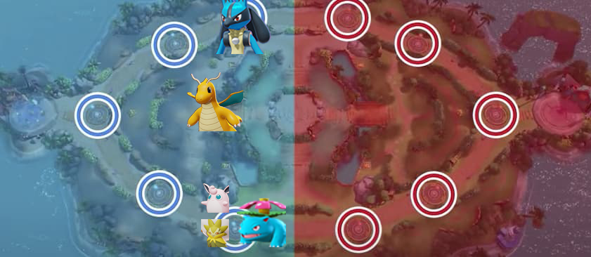
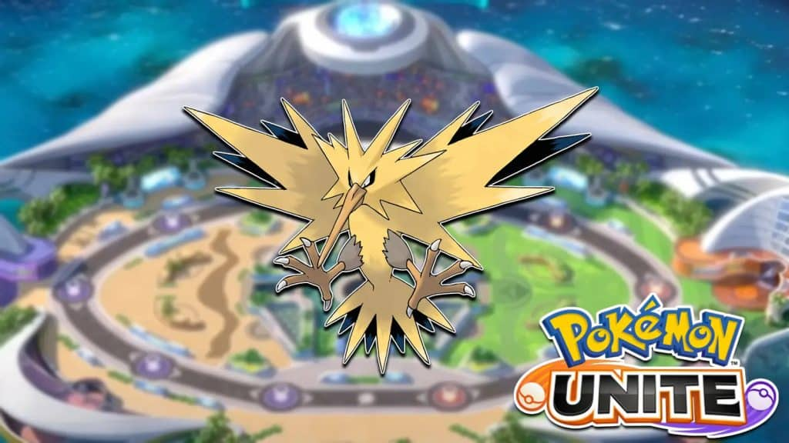

Une partie de pokemon unite ce joue de manière suivante:
-un solo top (personnages présent dans la ligne du haut de la map)
-un jungler (personnages se baladant dans toute la map pour aider son équipe)
-3 personnages en botlane (ligne du bas de la map) de préférences un dps (chargé d'infliger des dégats
aux adversaires ,
un "tank" chargé d'encaisser les dégats et un support chargé de soigner les alliés.

voici la team la plus adéquat actuellement.
Dans pokemon unite il y a egalemeent important qui est "elethor" qui confère beauuccoup d'avantagge à
l'équipe qui l'achève.

Il est si important qu'il faut une strategie pour le gérer en effet il spawnn au milieu de la map à 2:00
donc les 2 equipes doivent etre prêtes et placés pour le fight final.